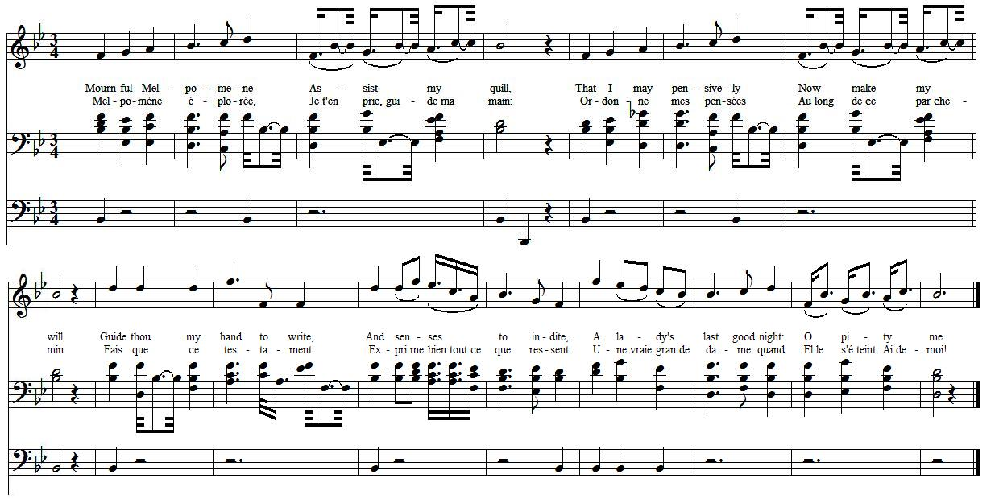
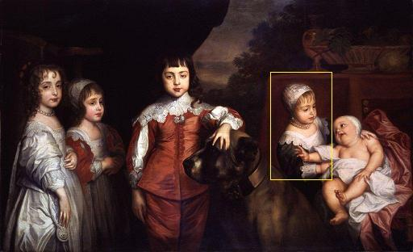

Mournful Melpomene
Melpomène éplorée
Ascribed to Princess Elisabeth (1635 - 1650)
Daughter of King Charles I
From "The True Loyalist", page 69, 1779
Tune - Mélodie"Robin Adair"
As sung by Geraldine Farrar in 1908 (see You-Tube link below)
Sequenced by Christian Souchon

|
To the tune:
EILEEN A ROON (Eibhlin a Ruin, “Eileen, my love”) is an Irish Slow Air (3/4 time) that is one of the oldest tracable tunes in all fiddle literature. W.H. Flood (in his "Story of the Harp", 1905) states that it was composed in 1386 by Carrol mor O'Daly (Cearbhall O Dalaigh, d. 1405), a famous Irish minstrel harper. Bunting (1913) refers to him as a contemporary of Rory Dall O’Cahan, who died in 1653, though he thinks the melody much older. "O'Daly so captivated Eileen (Eibhlin) Kavanagh of Polmonty Castle, Co. Carlow, that she eloped with him on the eve of her betrothal to a rival lover" (Flood, 1905, pg. 62). There were several O'Daly, starting with Donogh mor O'Daly, of Finvarra, Cistercian Abbot of Boyle (d. 1244), between the 13th and 17th centuries, and it might be that the version which have survived to the present day in Irish literature and song are really a composite of features of all . The melody was later admired by the German composer Georg Friedrich Händel during his stay in Ireland. The song retained its popularity, being sung at the Smock Alley Theatre in Dublin, in December 1743 as an interlude during performances of Julius Ceasar . Charles Coffey included it in his 1728 ballad opera The Beggar's Wedding , written after the success of John Gay's Beggar's Opera, and this was one of the earliest printed versions of the tune. A broadside without printer's imprint and with different words than Coffey's was published about 1740 under the title "Ailen Aroon, an Irish Ballad." ROBIN ADAIR : The song was popularized in Scotland by the long-lived Irish harper Denis O'Hampsey or Hempson (1697-1807), who had crossed over from Ireland a second time in 1745 to play for Bonnie Prince Charlie at Edinburgh . He played many Irish airs later claimed as Scottish, as this one was. The words of “Robin Adair,” set to the tune of "Eileen Aroon," were written by Lady Caroline Keppel (1735-1769) in the early 1750's about her lover, an Irish surgeon named Robert (‘Robin’) Adair, whom she was permitted to marry only several years later, when she was twenty-one. She died in 1769 at the age of thirty-two. The song was first published under the " Robin Adair" title in 1793 in "The Edinburgh Musical Miscellany", volume II, pg. 304 (but was known by this name to the anonymous authors of the "True Loyalist", in 1779). Source "The Fiddler's Companion" (cf. Liens). |
A propos de la mélodie:
EILEEN A ROON (Eibhlin a Ruin, "Hélène, mon amour") est un des airs lents irlandais (3/4) dont la littérature musicale a gardé les plus anciennes traces. W.H. Flood (dans son "Histoire de la harpe", 1905) affirme qu'il fut composé en 1386 par Carrol mor O'Daly (Cearbhall O Dalaigh, mort en 1405), harpiste irlandais réputé. Bunting (1913) voit en lui un contemporain de Rory Dall O'Cahan, qui mourut en 1653, mais croit la mélodie bien plus ancienne. Selon Flood (pg 62), "O'Daly charma Eileen (Eibhlin) Kavanagh de Polmonty Castle, comté de Carlow, au point qu'elle s'enfuit avec lui la veille de ses fiançailles avec un rival". Il y eut plusieurs O'Daly, à commencer par Donogh mor O'Daly, de Finvarra, abbé cistercien de Boyle (mort en 1244), entre le 13ème et le 17ème siècle. Il est possible que la version de la mélodie qui nous est parvenue soit un amalgame de toutes les précédentes . La mélodie retint ensuite l'attention du compositeur allemand Georg Friedrich Händel pendant un séjour qu'il fit en Irlande. Elle demeura en vogue, car elle fut chantée au Smock Alley Theatre de Dublin, en décembre 1743, en guise d'intermède pendant les représentations de Jules César . Charles Coffey l'introduisit dans le "ballad opera" Les noces du mendiant , composé dans le sillage de l'Opéra du Gueux de John Gay, en 1728, et ce fut l'une des premières versions imprimées de la mélodie. Une feuille volante (broadside) sans nom d'imprimeur et avec des paroles différentes de celles de Coffey vers 1740 sous le titre de "Aileen Aroon, ballade irlandaise". ROBIN ADAIR : le chant fut introduit en Ecosse, par le harpiste plus que centenaire Denis O'Hampsey or Hempson (1697-1807), qui y était revenu en 1745 pour jouer devant le Prince Charles à Edimbourg . Il joua plusieurs airs irlandais qui comme celui-ci furent baptisés "airs écossais". Le poème "Robin Adair" chanté sur le timbre "Eileen Aroon" fut composé par Lady Caroline Keppel (1735-1769) au début des années 1750 sur son bien-aimé, un médecin irlandais du nom de Robert (Robin) Adair, qu'elle ne put épouser que plusieurs années plus tard, quand elle eut 21 ans. Elle mourut en 1769, âgée de 32 ans. Le chant fut publié sous le nouveau titre "Robin Adair" en 1793 dans les "Miscellanées musicales d'Edimbourg", vol.2, page 304 (mais il était déjà connu sous ce nom des auteurs anonymes du "Vrai loyaliste" en 1779). Source "The Fiddler's Companion" (cf. Liens). |

|
MOURNFUL MELPOMENE
Written by Princess Elisabeth Daughter of His most sacred Majesty King CHARLES I. [1] of England, &c. &c. PART I 1. Mournful Melpomene [2] Assist my quill, That I may pensively Now make my will; Guide thou my hand to write, And senses to indite, A lady's last good night: O pity me. 2. I that was nobly born Hither am sent; Like to a wretch forlorn, Here to lament, In this most strange exile; Here to remain a while, 'Till Heav'n be pleased to smile, And send for me. 3. My friends cannot come nigh Me in this place, Nor keep me company Such is my case: Poor am I left alone Few to regard my moan; All my delights are gone, Heav'n succour me. 4. Each day with care and fears I am perplex'd; My drink is brinish tears, With sorrow mix'd: When others soundly sleep, I sadly sob and weep, Opprest with dangers deep: Lord comfort me. 5. When England flourished, My parents dear Tenderly nourished me Many a year; I was advanced high, In place of dignity, With golden bravity, They decked me. PART II 6. My garments dress'd with pearl, Richly approv'd, Ne'er was an English girl Better belov'd. Old and young, great and small, Waited upon my fall, [3] I had the love of all That did know me. 7. But from my former state, I am call'd back, Through destiny and fate, All goes to wreck; Fortune did lately frown, And caught me by the crown, So pull'd me head long down: Oh woe's me. 8. My dear friends are decayed Who loved me best; Ne'er was a harmless maid So much distrest: My father he is dead, My brother's banished, [4] All joy is from me fled: Heav'n comfort me. 9. How well are these at ease, And sweetly blest, That may go where they please, And where they list; To see their parents kind, As Nature doth them bind, Such joys I cannot find, Oh woe's me. 10. All earthly joys are gone, I will, and must, Only in God alone Firm put my trust. Adieu to joy and ease! I enjoy none of these; O! may it Heav'n please To pity me! [5] Source: "The True Loyalist; or Chevaliers's Favourite: being a collection of elegant songs, never before printed. Also several other loyal compositions, wrote by eminent hands." Printed in the year 1779. (page 69) |
On a broadside published in Edinburgh in 1776, whose original is in the British Library, this poem is summed up as follows:
"The lamenting lady's farewell to the world, who being in strange exile, bewails her own misery, complains upon fortune and destiny, describes the manner of her breeding, deplores the loss of her parents, wishing peace and happiness to England, which was her native country. And withal, resolved for death, cheerfully commended her soul to heaven and her body to the earth; quietly departed this life, anno 1650. To an excellent tune, called, "Oh hone, o hone" (=Eileen a roon)  Five children of King Charles I From left, future Queen Mary, future King James II, future King Charles II (stroking the dog), Princess Elisabeth (in yellow box) and future Queen Anne, 1637 by Anthony Van Dyck. Dans une feuille volante publiée à Edimbourg en 1776 et dont l'original est conservé à la "British Library" ce poème est résumé comme suit: " Le lamentable adieu au monde d'une dame, qui contrainte à un exil lointain, déplore sa propre infortune, accuse le sort et la destinée, décrit l'éducation qu'elle a reçu, pleure sur la perte de ses parents tout en souhaitant paix et bonheur à l'Angleterre, sa patrie. Après quoi, résignée à mourir, elle recommande courageusement son âme au Ciel et confie son corps à la terre. Elle quitta la vie paisiblement en 1650. Sur une excellente mélodie intitulée "o hone, o hone" (=Eileen a roon) |
MELPOMENE EPLOREE
Composée par la Princesse Elisabeth fille de Sa très sacrée Majesté, CHARLES I. [1] roi d'Angleterre, etc. etc. 1ère PARTIE 1. Melpomène éplorée, [2] Je t'en prie, guide ma main: Ordonne mes pensées Au long de ce parchemin. Fais que ce testament Exprime bien tout ce que ressent Une vraie grande dame quand Elle s'éteint. Aide-moi! 2. Née de haute lignée, Je me retrouve en ces lieux, Pauvresse abandonnée, Et des larmes pleins les yeux. En cet exil lointain Je resterai jusqu'à ce qu'enfin Le Ciel ému de mon chagrin Envoie Son ange vers moi. 3. Mes amis sont tenus A l'écart de ma prison. Aucun d'eux n'est venu Distraire mon abandon: On m'a dépossédée. Nul n'a souci de ma destinée. Toutes mes joies s'en sont allées. O Ciel clément, secours-moi! 4. Alarmes et soucis: Voilà mon lot quotidien. Et mes pleurs ont empli La coupe où gît mon chagrin: Aux autres le repos, A moi les larmes et les sanglots. Les dangers m'oppressent. Il faut Dieu, tourner Tes yeux vers moi. 5. L'Angleterre autrefois Prospérait et mes parents, Des années et des mois Me nourrirent tendrement. Le rang que j'occupais Me conférait haute dignité. Leur précieuse témérité Prudemment veillait sur moi. 2ème PARTIE 6. De perles rehaussés Etaient mes somptueux atours. Nulle fille d'Anglais Ne suscita tant d'amour. Servantes, potentats Prenaient soin que je ne tombe pas. [3] Tous m'aimaient bien en ce temps-là Qui vivaient autour de moi. 7. Mais me voilà déchue De mes splendeurs d'autrefois. Le destin a voulu Mettre l'édifice à bas. La Fortune en courroux, Sans couronne, nous mit à genoux. Je n'ai plus rien. On m'a pris tout. Nul n'est plus triste que moi. 8. Envolée l'amitié De ceux qui m'aimaient le plus. Jeune fille jamais Telle épreuve n'a connu: Mon père est mort, hélas Et mon frère exilé n'est plus là. [4] Elle a fui, la joie d'autrefois. Mon Dieu, prends pitié de moi. 9. Qu'ils sont heureux ceux qui Vont et viennent à leur gré. Ah quel état béni Que d'avoir sa liberté! De voir ses chers parents, Ceux à qui vous lient les liens du sang! Privée que j'en suis à présent. Nul n'est plus triste que moi. 10. Adieu, terrestres biens! Car j'ai le devoir formel De n'espérer plus rien De personne, sauf du Ciel. Adieu, joies et plaisirs! Vous n'êtes plus que des souvenirs O puisse le Ciel compatir Et prendre pitié de moi. [5] (Trad. Christian Souchon (c) 2011) |
|
[1] The
Princess Elizabeth of England and Scotland
(28 December 1635–8 September 1650) was the second daughter of King Charles I of England and Henrietta of France. From the age of six until her early death at the age of fourteen she was a prisoner of Parliament during the English Civil War.
[2] Melpomene : the invocation of the Muse of Tragedy was traditional in Roman and Greek poetry, so that one might create beautiful lyrical phrases (for instance in Horace's Odes). That the young Princess could resort to such classical references might account for the outstanding education she enjoyed. I could find no confirmation for the ascription of this curious poem to her. However she demonstrated her writing skills on two occasions: - On the outbreak of the English Civil War, when she was placed under the care of a guardian and Parliament removed Elizabeth's household, the twelve-year-old princess wrote a letter of appeal against the decision which was overturned in 1648. - In her emotional written accounts of her final meeting, on 29th January 1649, with her father on the eve of his execution and his final words to his children have been published in numerous histories about the war and King Charles I. [3] Waited upon my fall : In 1643, the seven-year-old Elizabeth broke her leg, and soon moved to Chelsea with her younger brother Henry, the Duke of Gloucester. She was tutored by the great female scholar Bathsua Makin until 1644, by which time she could read and write in Hebrew, Greek, Italian, Latin and French. Other prominent scholars dedicated works to her, and were amazed by her flair for religious reading. [4] My father is dead, My brother is banished : After their father's execution (1649), the royal children, Elisabeth and her brother Henry, became unwanted charges. Parliament sent them to Penshurst Place , where they were placed under the care of the Earl of Leicester and his wife Dorothy . The Countess of Leicester treated Elizabeth with great kindness, and was presented by the Princess with a valuable jewel that was later the centre of conflict between the Countess and Parliament. In 1650, Elizabeth's eldest brother, the now titular Charles II, journeyed to Scotland to be crowned king of that country. Elizabeth was moved to the Isle of Wight as a hostage, and placed in the care of Anthony Mildmay . [5] Heaven pity me : The move from Penshurst was probably the cause of Elisabeth's death. She caught a cold, which quickly developed into pneumonia, and died on 8 September 1650 . She was buried at St. Thomas's Church, Newport, on the Isle of Wight. Queen Victoria, who made her favourite home at Osborne House on the Isle of Wight, commanded that a suitable monument be erected to her memory. In 1856, a white marble sculpture by Queen Victoria's favourite sculptor Carlo Marochetti was commissioned for her grave. Source: Wikipedia |
[1] La
Princesse Elisabeth d'Angleterre et d'Ecosse
(28 décembre 1635 - 8 septembre 1650) était la seconde fille du roi Charles I d'Angleterre et d'Henriette de France. Depuis l'âge de six ans jusqu'à sa mort à 14 ans elle fut le prisonnière du Parlement pendant la guerre civile anglaise.
[2] Melpomène : L'invocation à la muse de la tragédie est traditionnelle dans la poésie Gréco-latine, afin de créer de belles périodes lyriques (exemple: les Odes d'Horace). Que la Princesse recoure à de telles références classiques pourrait s'expliquer par l'éducation poussée qui fut la sienne. Je n'ai trouvé nulle part confirmation de l'attribution de ce poème à Elisabeth. Mais, par deux fois, elle fit preuve de remarquables talents d'écrivain: - lorsqu'éclata la guerre civile et que, confiée aux soins d'un tuteur, elle se vit privée par le Parlement des services de sa maison, l'adolescente de 12 ans écrivit une lettre de protestation contre cette décision qui fut rapportée en 1648. - dans des relations chargées d'émotion qu'elle fit de la dernière entrevue avec son père, le 29 janvier 1649, la veille de son exécution. Les dernières paroles du roi furent reproduites dans de nombreux ouvrages traitant de la guerre et de Charles I. [3] Prenaient soin que je ne tombe pas : En 1643, Elisabeth, alors âgée de 7 ans, se cassa la jambe et dut déménager à Chelsea avec son jeune frère Henri, le Duc de Gloucester. Elle eut comme perceptrice, la grande érudite Bathsua Makin jusqu'en 1644. A cette elle savait lire et écrire en hébreu, grec, italien, latin et français. D'autres éminents érudits lui dédièrent leurs œuvres, impressionnés qu'ils étaient par sa perspicacité en matière d'exégèse. [4] Mon père est mort, mon frère est exilé : après l'exécution de leur père (1649), les enfants royaux, Elisabeth et son frère, firent figures d'indésirables. Le parlement les envoya à Penshurst Place où ils furent placés sous la garde du Comte de Leicester et de sa femme Dorothée . La comtesse traita Elisabeth avec beaucoup de délicatesse. Celle-ci lui fit cadeau d'un bijou précieux qui fut au centre d'un conflit entre la comtesse et le parlement. En 1650, le frère aîné d'Elisabeth, Charles II, de jure , vint en Ecosse pour s'y faire couronner roi de ce pays. On emmena Elisabeth sur l'Île de Wight où elle fut retenue en otage chez Antony Mildmay. [5] Puisse le Ciel compatir : Ce départ de Penshurst fut sans doute la cause de la mort d'Elisabeth. Elle prit froid et le mal se transforma rapidement en pneumonie. Elle mourut le 8 décembre 1650 . Elle fut inhumée dans l'église Saint-Thomas de Newport, Île de Wight. La reine Victoria, qui avait fait de sa maison d'Osborne House à Whight sonséjour favori, fit ériger un monument convenable à la mémoire de la Princesse. En 1856, son sculpteur préféré, Carlo Marochetti reçut commande d'une statue de marbre pour orner le tombeau de la jeune fille. Source: Wikipedia |
|
|
|
|
1. What's this dull town to me?
Robin's not near; What was't I wished to see? What wish'd to hear? Where's all the glee and mirth, Made this town heav'n on earth? Oh! they're all fled with thee, Robin Adair. 2. But now thou'rt cold to me, Robin Adair; O thou art cold to me Robin Adair; Yet him I loved so well Still in my heart shall dwell; O, I can ne'er forget Robin Adair! |
ROBIN ADAIR (lyrics by Caroline Keppel 1735 - 1769) Sung in 1908 by the American soprano Geraldine Farrar (1882 - 1967) |
1. Tout est bien triste ici,
Robin parti. Je me languis de lui, Mais il m'a fuie. Mon cœur était en joie, De le savoir si près de moi Mais c'est bien fini tout cela, Robin Adair. 2. Pourquoi tant de froideur? Robin Adair? Pourquoi tant de rigueur Robin Adair? Mais toi que j'aimais tant En mon cœur demeures pourtant. La pensée de tous mes instants: Robin Adair. |